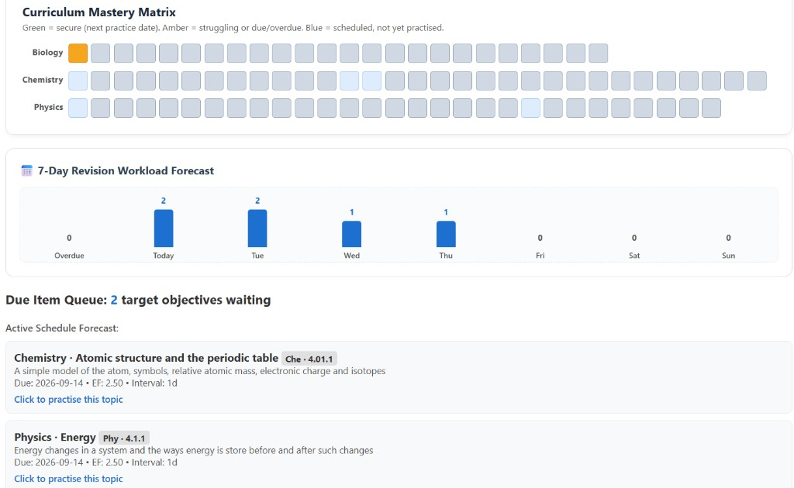
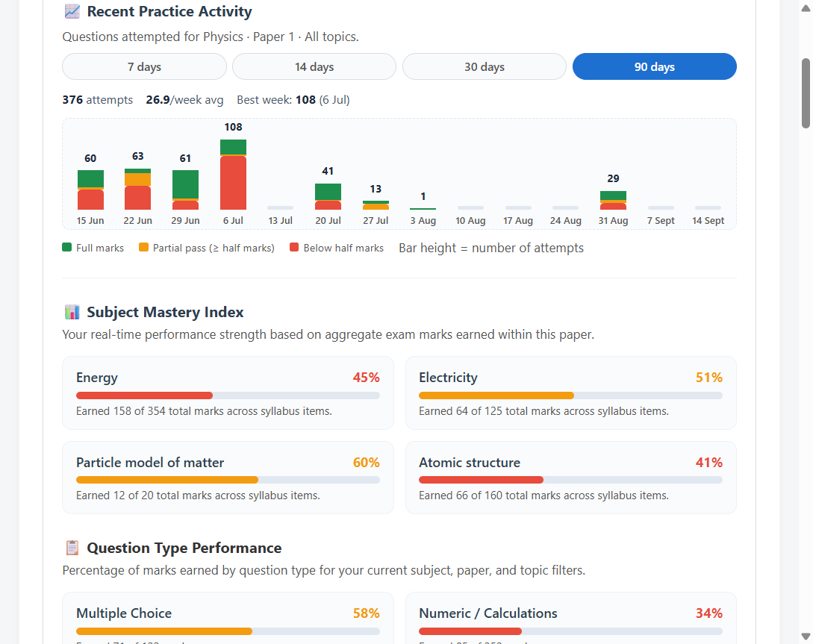
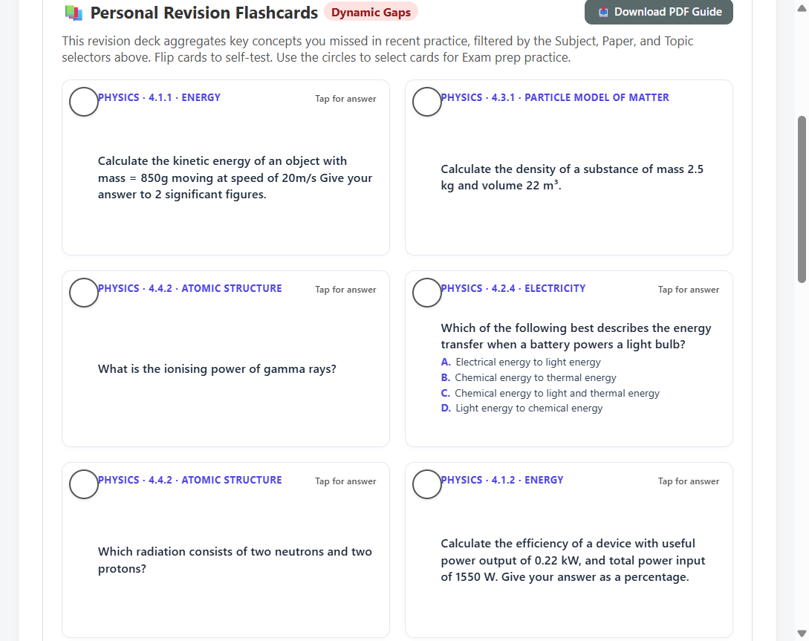
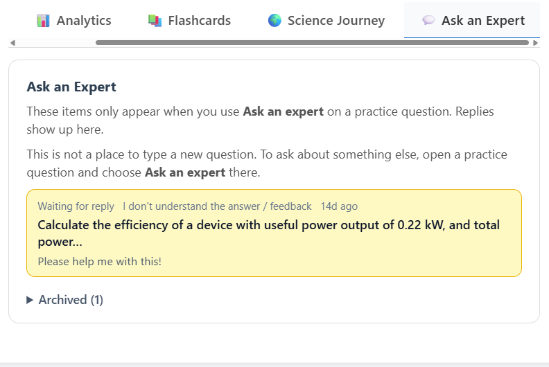
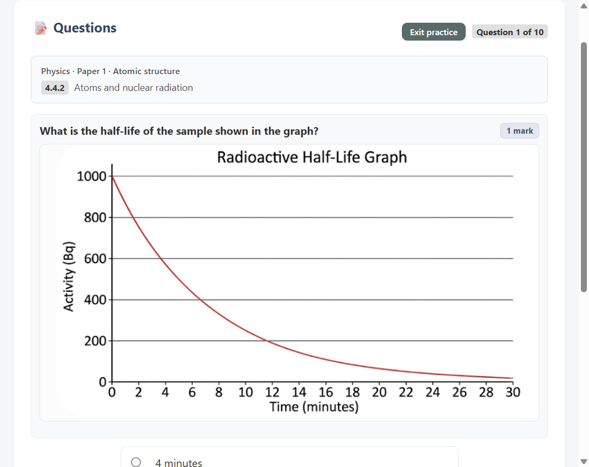
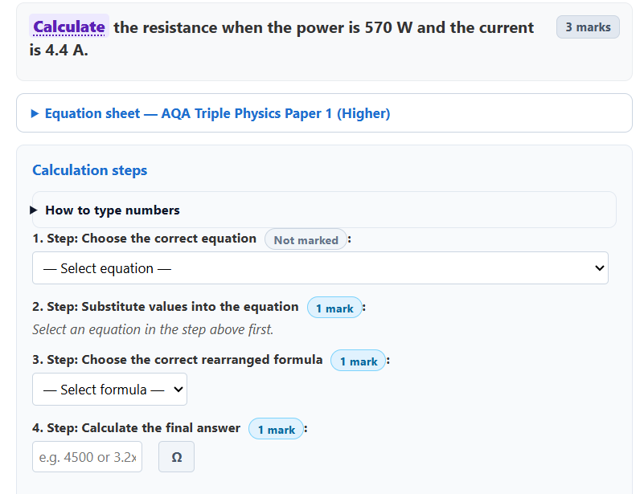
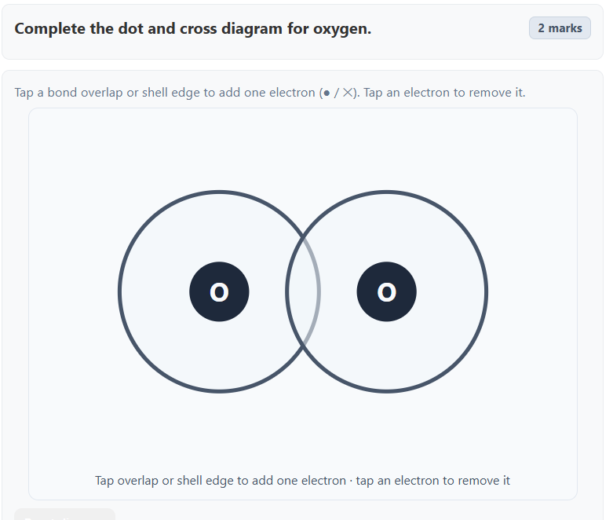

SRS scheduling
Topics resurface on a personalised schedule based on how well you know them — not random question dumps.
Spaced repetition scheduling, exam-style practice papers, and progress analytics — so you practise what matters, when it matters.
Built for students sitting the AQA exam board. Designed for Combined Science: Trilogy students, or those studying one or more Triple Science GCSEs (Biology, Chemistry, and/or Physics).
Not affiliated with or endorsed by AQA.
Real screens from the student dashboard — mastery tracking, analytics, flashcards, Ask an Expert, and exam-style questions.







Practice what matters, when it matters — with tools that mirror how memory and exams actually work.
Topics resurface on a personalised schedule based on how well you know them — not random question dumps.
Quick sets or full 35/70-mark paper builds aligned to AQA paper structure and your Foundation or Higher tier.
Track streaks, XP, concept gaps, and weekly forecasts so you know where to focus next.
Join your class with a code so teachers can see roster progress and support your revision.
Get from sign-up to confident practice in minutes.
Create a student account with your email and start a 2-week trial with full access. Teachers can register separately on the teacher portal.
Choose Trilogy or Triple Science, set Foundation or Higher tier, rank subjects, and optionally join your class with a code.
Start Practice follows your schedule. Use the mastery matrix, flashcards, and exam prep when you need more.
Watch your streak grow, earn XP, and review analytics to stay on top of weak topics.
Full access during your 2-week trial — then continue with a paid subscription.
| Feature | What it does |
|---|---|
| Course paths | Combined Science: Trilogy, or Triple Science with one or more of Biology, Chemistry, and Physics. |
| Exam tier & grades | Foundation or Higher (per subject on Triple), plus current and target grades to personalise difficulty. |
| Subject order & exam horizon | Rank subjects and set when exams fall so new topics are introduced at a sensible pace. |
| Class codes | Join a teacher’s class so your progress appears on their roster. |
| Spaced repetition (SRS) | Spec-point scheduling with a due queue — Start Practice works through what is due next. |
| Curriculum Mastery Matrix | Heatmap of secure, struggling, and not-yet-practised topics; click a cell to practise that topic. |
| 7-day workload forecast | See upcoming revision load so you can plan the week ahead. |
| Exam preparation | Quick sets (10 / 20), half paper (35 marks), and full paper (70 marks) with adaptive difficulty. |
| Multiple choice | Exam-style MCQs with instant feedback. |
| Short written answers | Mark-point checking for concise responses. |
| Numeric & calculations | Substitution and calculation practice with unit-aware marking. |
| Chemistry diagrams | Interactive bonding and structure diagrams you complete step by step. |
| Circuit diagrams | Identify symbols, complete circuits, or build from a template. |
| Equipment diagrams | Label and work with required-practical style equipment setups. |
| Extended writing + AI marking | Longer answers marked against AQA-style mark points with feedback. |
| Command-word tips & hints | AQA command-word guidance and optional hints during practice. |
| Session resume | Pick up an unfinished practice session where you left off. |
| Streaks, XP & levels | Daily streaks and XP progression that reward consistent revision. |
| Analytics dashboard | Activity charts, subject mastery, question-type performance, AO mastery, maths skills and working scientifically. |
| Flashcards | Dynamic cards from recent gaps; select cards for exam prep; download a PDF study guide. |
| Science Journey | Turn XP into travel across a world map of scientist destinations. |
| Ask an Expert | Flag a practice question for a human expert reply; track responses in your dashboard. |
Every feature works during your trial. After that, continue with an annual subscription.
2-week free trial — full access to everything
£15/year for early adopters
Then £20/year standard. Cancel anytime before the trial ends and you won’t be charged.
Start 2-week trialYou get full access for two weeks. After that, a paid subscription keeps everything unlocked. Early adopters pay £15/year (then £20/year).
Choose Combined Science: Trilogy, or Triple Science with one or more separate GCSEs. On Triple you can set Foundation or Higher per subject.
You choose FT or HT during onboarding. Questions and exam paper builds filter to match your tier so you practise at the right level.
We store your account email, practice attempts, and spaced-repetition state to personalise your schedule. See our Privacy Policy for details.
Your teacher creates a class in the teacher portal and shares a six-character code. Enter it during onboarding or in settings to link your account to the class roster.